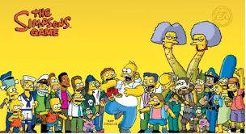

HISTORIA
The Simpsons (en español, Los Simpson) es una serie estadounidense de animación, en formato de comedia de situación, creada por Matt Groening para Fox Broadcasting Company y emitida en varios países del mundo. La serie es una sátira hacia la sociedad estadounidense que narra la vida y el día a día de una familia de clase media de ese país (cuyos miembros son Homer, Marge, Bart, Lisa y Maggie Simpson) que vive en un pueblo ficticio llamado Springfield.
La familia fue concebida por Groening y poco después se estrenó como una serie de cortos de animación producidos por James L. Brooks. Groening creó una familia disfuncional y nombró a sus personajes en honor a los miembros de su propia familia, sustituyendo su propio nombre por Bart.La familia fue concebida por Groening y poco después se estrenó como una serie de cortos de animación producidos por James L. Brooks. Groening creó una familia disfuncional y nombró a sus personajes en honor a los miembros de su propia familia, sustituyendo su propio nombre por Bart.